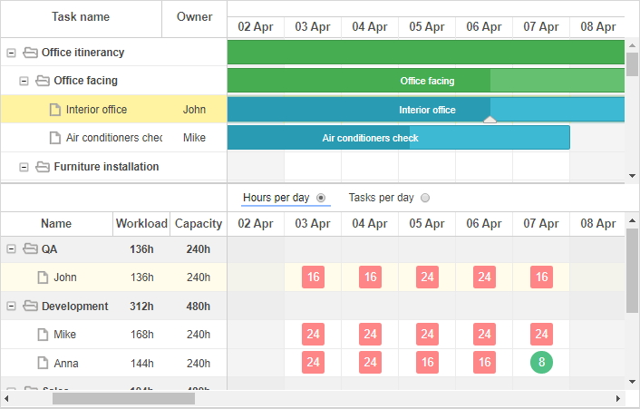
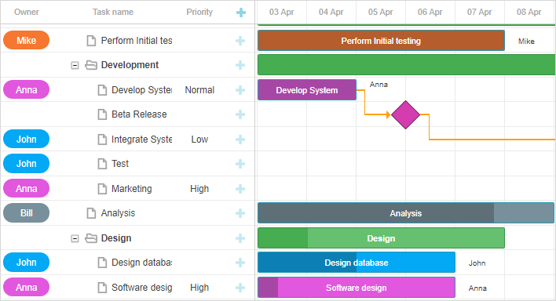
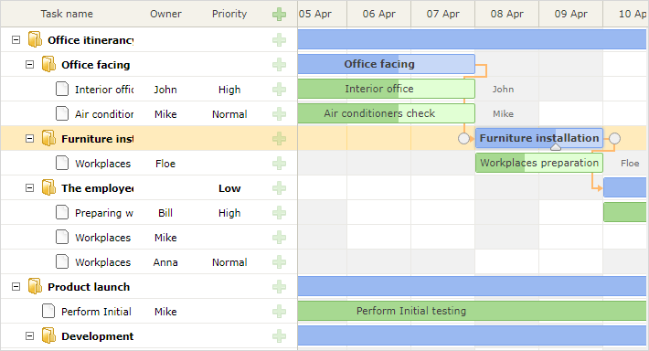
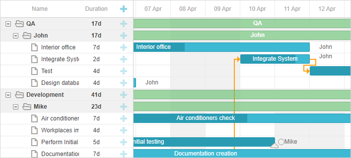
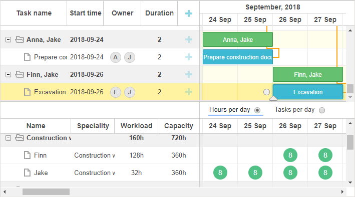
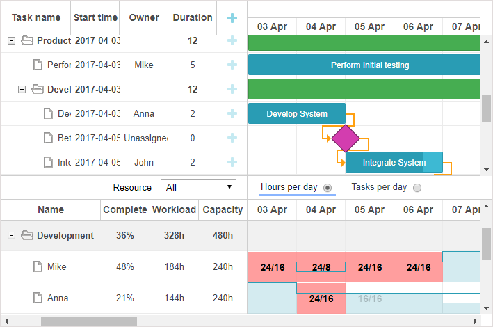
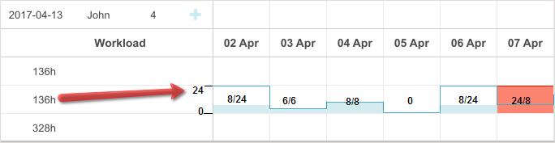
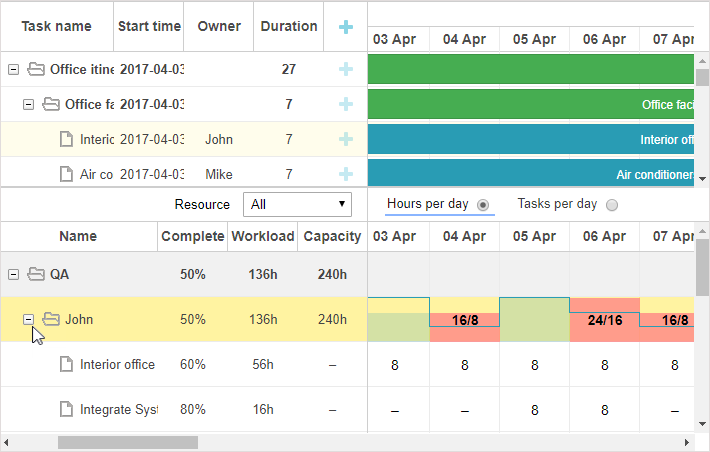

Available only in PRO Edition
This functionality is available in the Gantt PRO edition only.
Gantt provides predefined resource views for highlighting resource load, methods for breaking project down by a resource for load balancing, task and resource-specific work-time calendars.

Although Gantt itself does not calculate the resource load, and does not have any methods that can be used out of the box, Gantt provides you with public API for implementing any custom behavior.
The resource relation is defined by the resource_property configuration option:
gantt.config.resource_property = "user_id";
// task.user_id <-> resource.id
Resources can be connected to tasks via the properties of the task object in one of the following ways:
{
id: 1, text: "Task #1", start_date: "02-04-2018", duration: 8, progress: 0.6,
user_id: 5 // 5 is the id of the resource
}
{
id: 1, text: "Task #1", start_date: "02-04-2018", duration: 8, progress: 0.6,
users: [2, 3] // 2 and 3 are the ids of resources
}
You can use this format with the custom multiselect control.
{
id: 1, text: "Task #1", start_date: "02-04-2018", duration: 8, progress: 0.6,
users: [{resource_id:2, value:8}, {resource_id:3, value:4}]
}
The resources are assigned to the Task1 as follows: the resource with id=2 - in the quantity of 8 units, while the resource with the id=3 - in the quantity of 4 units. This format is supported by the Resources Control of the lightbox.
When sending data to the server, DataProcessor serializes the values of the described properies into JSON. To process such records on the server with ease, make use of the "REST_JSON" dataprocessor mode.
There is a shorthand for getting all tasks assigned to a resource - getResourceAssignments.
gantt.getResourceAssignments("6");
The method takes as a parameter the id of the resource and returns an array of objects with tasks assigned to the resource:
[
{task_id: 5, resource_id: "6", value: 5},
{task_id: 18, resource_id: "6", value: 2},
{task_id: 19, resource_id: "6", value: 3},
{task_id: 21, resource_id: "6", value: 5}
]
Each object contains the following properties:
Resources can be assigned to any property of the task object using the built-in lightbox.
gantt.serverList("people", [
{key: 1, label: "John"},
{key: 2, label: "Mike"},
{key: 3, label: "Anna"},
{key: 4, label: "Bill"},
{key: 7, label: "Floe"}
]);
gantt.locale.labels.section_owner = "Owner";
gantt.config.lightbox.sections = [
{name:"description", height:38, map_to:"text", type:"textarea", focus:true},
{name:"owner", map_to:"owner_id", type:"select", options:gantt.serverList("people")},
{name:"time", type:"duration", map_to: "auto"}
];
Collections specified as server lists can be loaded and updated dynamically, after gantt is initialized:
// init lightbox with an empty collection
gantt.locale.labels.section_owner = "Owner";
gantt.config.lightbox.sections = [
{name:"description", height:38, map_to:"text", type:"textarea", focus:true},
{name:"owner", map_to:"owner_id", type:"select", options:gantt.serverList("people")},
{name:"time", type:"duration", map_to: "auto"}
];
// once options are loaded
gantt.updateCollection("people", [
{key: 1, label: "John"},
{key: 2, label: "Mike"},
{key: 3, label: "Anna"},
{key: 4, label: "Bill"},
{key: 7, label: "Floe"}
]);

Related sample: Assigning owners to tasks
If you define resources via the serverList collection, they can be loaded together with the rest of the data, otherwise you'll need to load them manually.
The resource name can be displayed as a part of task description or a label of one of the grid cells. Gantt doesn't provide a ready method for getting an item specified in the server list by its id, so you'll need to implement a small helper for this:
function byId(list, id) {
for (var i = 0; i < list.length; i++) {
if (list[i].key == id)
return list[i].label || "";
}
return "";
}
After that you can use the resource name in templates:
gantt.config.columns = [
{name: "owner", width: 80, align: "center", template: function (item) {
return byId(gantt.serverList('people'), item.owner_id)}},
{name: "text", label: "Task name", tree: true, width: '*'},
{name: "add", width: 40}
];
gantt.templates.rightside_text = function(start, end, task){
return byId(gantt.serverList('people'), task.owner_id);
};
Related sample: Assigning owners to tasks
For coloring you'll usually need the following templates:
Depending on your context, you can
Related sample: Assigning owners to tasks
Gantt supports the custom work-time calendars feature. Work-time calendars can be associated with specific resources.

They are mapped to tasks via the property value in one-to-one relation:
// a resource value will be taken from the `task.resource_id` property
gantt.config.resource_property = "resource_id";
gantt.config.resource_calendars = {
"resource1" : "calendarId1",
"resource2" : "calendarId2",
"resource3" : "calendarId3"
};
You can use any property to assign calendars to resources. If the resource property is changed dynamically, the gantt will automatically recalculate time of tasks using a new calendar.
Related sample: Resource calendars
If multiple resources can be assigned to a single task, the gantt can automatically generate a common calendar for all assigned resources.
You can get more information in the related article.
You can use the grouping extension to break down the whole project by the resource property.

This feature can be used for balancing resource load in the calendar.
Related sample: Break down by resources
Read more about task grouping in the related article.
In case you assign several resources to a task, tasks will be grouped by assigned resources. It means that a task assigned to two persons won't be duplicated for each of them. Instead it will be rendered once with both persons assigned to it. Note that grouped tasks will be sorted by the start date.

Related sample: Group by multiple resources
Please note that dragging of tasks grouped by multiple resources is impossible.
dhtmlxGantt has two types of predefined layout view for displaying resource load of gantt: resource load diagram and resource histogram.
It includes corresponding views for the grid and timeline: "resourceGrid" and "resourceTimeline".
gantt.config.layout = {
css: "gantt_container",
rows: [
{
cols: [
{view: "grid", group:"grids", scrollY: "scrollVer"},
{resizer: true, width: 1},
{view: "timeline", scrollX: "scrollHor", scrollY: "scrollVer"},
{view: "scrollbar", id: "scrollVer", group:"vertical"}
],
gravity:2
},
{ resizer: true, width: 1},
{
config: resourceConfig,
cols: [
{view: "resourceGrid", group:"grids", width: 435, scrollY:"resourceVScroll"},
{resizer: true, width: 1},
{view: "resourceTimeline", scrollX: "scrollHor", scrollY:"resourceVScroll"},
{view: "scrollbar", id: "resourceVScroll", group:"vertical"}
],
gravity:1
},
{view: "scrollbar", id: "scrollHor"}
]
};
Related sample: Resource load diagram
Once initialized, resourceGrid will work in the same way as the default grid view, but readonly. resourceTimeline will inherit the scale configuration from the default timeline and will have two layers:
gantt.templates.resource_cell_value = function(start_date, end_date, resource, tasks){
var html = "<div>" + tasks.length * 8 + "h</div>";
return html;
};
Related sample: Templates of the Resource diagram
This type of the layout view for displaying resource load of gantt includes the "resourceGrid" and "resourceHistogram" views for the grid and timeline correspondingly.

gantt.config.layout = {
css: "gantt_container",
rows: [
{
gravity: 2,
cols: [
{view: "grid", group:"grids", scrollY: "scrollVer"},
{resizer: true, width: 1},
{view: "timeline", scrollX: "scrollHor", scrollY: "scrollVer"},
{view: "scrollbar", id: "scrollVer", group:"vertical"}
]
},
{ resizer: true, width: 1, next: "resources"},
{
gravity:1,
id: "resources",
config: resourceConfig,
templates: resourceTemplates,
cols: [
{ view: "resourceGrid", group:"grids", scrollY: "resourceVScroll" },
{ resizer: true, width: 1},
{ view: "resourceHistogram", capacity:24, scrollX: "scrollHor",
scrollY: "resourceVScroll"},
{ view: "scrollbar", id: "resourceVScroll", group:"vertical"}
]
},
{view: "scrollbar", id: "scrollHor"}
]
};
Related sample: Resource histogram
The same as in the resource load diagram, resourceGrid will work in the same way as the default grid view, but readonly. resourceHistogram has the following additional templates:
gantt.templates.histogram_cell_class=function(start_date,end_date,resource,tasks){
return "";
};
gantt.templates.histogram_cell_label=function(start_date,end_date,resource,tasks){
return tasks.length * 8;
};
gantt.templates.histogram_cell_allocated=function(start_date,end_date,resource,tasks){
return tasks.length * 8;
};
gantt.templates.histogram_cell_capacity=function(start_date,end_date,resource,tasks){
return 24;
};
What maxCapacity is
If each row of the histogram is considered as a bar chart, maxCapacity is the height of the Y-scale of this chart. In the image below maxCapacity = 24:

Thus, if the templates histogram_cell_allocated or histogram_cell_capacity are set to value 24, it implies the highest point of the row.
maxCapacity can be defined either at the histogram level:
{ view: "resourceHistogram", capacity:24, scrollX: "scrollHor",
scrollY: "resourceVScroll"}
or individually for each resource:
resourcesStore.parse([
{id: 1, text: "John", capacity:8},
{id: 2, text: "Mike", capacity:4},
{id: 3, text: "Anna", capacity:8},
{id: 4, text: "Bill", capacity:8},
{id: 5, text: "Floe", capacity:8}
]);
Capacity defined at the resource level overrides the global capacity of histogram for a given resource.
By default both views (either "resourceGrid" and "resourceTimeline" or "resourceGrid" and "resourceHistogram") will be bound to the data store named as specified in the gantt.config.resource_store configuration option.
This data store has to be initialized manually with the help of the createDatastore method:
var resourcesStore = gantt.createDatastore({
name: gantt.config.resource_store,
// use treeDatastore if you have hierarchical resources (e.g. workers/departments),
// skip the "type" if you have a flat structure
type: "treeDatastore",
initItem: function (item) {
item.parent = item.parent || gantt.config.root_id;
item[gantt.config.resource_property] = item.parent;
item.open = true;
return item;
}
});
In order to populate the data store, use the datastore.parse method:
resourcesStore.parse([
{id: 1, text: "QA", parent:null},
{id: 2, text: "Development", parent:null},
{id: 3, text: "Sales", parent:null},
{id: 4, text: "Other", parent:null},
{id: 5, text: "Unassigned", parent:4},
{id: 6, text: "John", parent:1},
{id: 7, text: "Mike", parent:2},
{id: 8, text: "Anna", parent:2},
{id: 9, text: "Bill", parent:3},
{id: 10, text: "Floe", parent:3}
]);
If you want to use resources in the lightbox, it might be a good idea to do it via the serverList method from the onParse event of the data store:
resourcesStore.attachEvent("onParse", function(){
var people = [];
resourcesStore.eachItem(function(res){
if(!resourcesStore.hasChild(res.id)){
var copy = gantt.copy(res);
copy.key = res.id;
copy.label = res.text;
people.push(copy);
}
});
gantt.updateCollection("people", people);
});
It is possible to expand the resources panel to show all the tasks assigned to a particular resource by enabling the fetchTasks property during initialization of the datastore via the createDatastore method:

gantt.$resourcesStore = gantt.createDatastore({
name: gantt.config.resource_store,
type: "treeDatastore",
fetchTasks: true, initItem: function (item) {
item.parent = item.parent || gantt.config.root_id;
item[gantt.config.resource_property] = item.parent;
if(!item.parent){
item.open = true;
}else{
item.open = false;
}
return item;
}
});
Related sample: Show all assigned tasks in the resource panel
With the fetchTasks property set to true, Gantt renders all tasks assigned to a certain resource in the resource view panel. This functionality works both for the resource diagram and resource histogram types of layout.
There is a shorthand for getting all tasks assigned to a resource - getResourceAssignments.
gantt.getResourceAssignments("6");